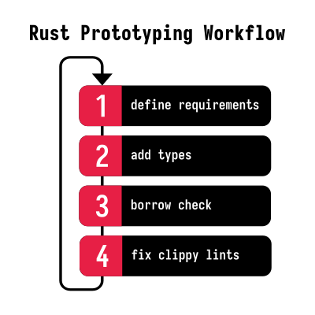

Programming is an iterative process. As much as we would like to come up with the perfect solution from the start, it rarely works that way.
Good programs often begin as quick prototypes. While many experiments remain prototypes, the best programs can evolve into production code.
Whether you’re writing games, CLI tools, or designing library APIs, prototyping helps tremendously in finding the best approach before committing to a design. It often helps reveal the patterns behind more idiomatic code.
For all its explicitness, Rust is surprisingly ergonomic when iterating on ideas. Contrary to popular belief, it is a joy for building prototypes.
You don’t need to be a Rust expert to be productive - in fact, many of the techniques we’ll discuss specifically help you sidestep Rust’s more advanced features. If you focus on simple patterns and make use of Rust’s excellent tooling, even less experienced Rust developers can quickly bring their ideas to life.
Feel like listening instead?
I talked about prototyping in Rust on SE Radio. The article was the basis for the episode, so you can listen to it while reading along.
Why People Think Rust Is Not Good For Prototyping
The common narrative goes like this:
When you start writing a program, you don’t know what you want and you change your mind pretty often. Rust pushes back when you change your mind because the type system is very strict. On top of that, getting your idea to compile takes longer than in other languages, so the feedback loop is slower.
I’ve found that developers not yet too familiar with Rust often share this preconception. These developers stumble over the strict type system and the borrow checker while trying to sketch out a solution. They believe that with Rust you’re either at 0% or 100% done (everything works and has no undefined behavior) and there’s nothing in between.
Here are some typical misbeliefs:
- “Memory safety and prototyping just don’t go together.”
- “Ownership and borrowing take the fun out of prototyping.”
- “You have to get all the details right from the beginning.”
- “Rust always requires you to handle errors.”
These are all common misconceptions and they are not true.
It turns out you can avoid all of these pitfalls and still get a lot of value from prototyping in Rust.
Problems with Prototyping in Other Languages
If you’re happy with a scripting language like Python, why bother with Rust?
That’s a fair question! After all, Python is known for its quick feedback loop and dynamic type system, and you can always rewrite the code in Rust later.
Yes, Python is a great choice for prototyping. But I’ve been a Python developer for long enough to know that I’ll very quickly grow out of the “prototype” phase -– which is when the language falls apart for me.
One thing I found particularly challenging in Python was hardening my prototype into a robust, production-ready codebase. I’ve found that the really hard bugs in Python are often type-related: deep down in your call chain, the program crashes because you just passed the wrong type to a function. Because of that, I find myself wanting to switch to something more robust as soon as my prototype starts to take shape.
The problem is that switching languages is a huge undertaking – especially mid-project. Maybe you’ll have to maintain two codebases simultaneously for a while. On top of that, Rust follows different idioms than Python, so you might have to rethink the software architecture. And to add insult to injury, you have to change build systems, testing frameworks, and deployment pipelines as well.
Wouldn’t it be nice if you could use a single language for prototyping and production?
What Makes Rust Great for Prototyping?
Using a single language across your entire project lifecycle is great for productivity. Rust scales from proof-of-concept to production deployment and that eliminates costly context switches and rewrites. Rust’s strong type system catches design flaws early, but we will see how it also provides pragmatic escape hatches if needed. This means prototypes can naturally evolve into production code; even the first version is often production-ready.
But don’t take my word for it. Here’s what Discord had to say about migrating from Go to Rust:
Remarkably, we had only put very basic thought into optimization as the Rust version was written. Even with just basic optimization, Rust was able to outperform the hyper hand-tuned Go version. This is a huge testament to how easy it is to write efficient programs with Rust compared to the deep dive we had to do with Go. – From Why Discord is switching from Go to Rust
What A Solid Rust Prototyping Workflow Looks Like
If you start with Rust, you get a lot of benefits out of the box: a robust codebase, a strong type system, and built-in linting.
All without having to change languages mid-project! It saves you the context switch between languages once you’re done with the prototype.
Python has a few good traits that we can learn from:
- fast feedback loop
- changing your mind is easy
- it’s simple to use (if you ignore the edge cases)
- very little boilerplate
- it’s easy to experiment and refactor
- you can do something useful in just a few lines
- no compilation step
The goal is to get as close to that experience in Rust as possible while staying true to Rust’s core principles. Let’s make changes quick and painless and rapidly iterate on our design without painting ourselves into a corner. (And yes, there will still be a compilation step, but hopefully, a quick one.)
Tips And Tricks For Prototyping In Rust
Use simple types
Even while prototyping, the type system is not going away. There are ways to make this a blessing rather than a curse.
Use simple types like i32, String, Vec in the beginning.
We can always make things more complex later if we have to – the reverse is much harder.
Here’s a quick reference for common prototype-to-production type transitions:
| Prototype | Production | When to switch |
|---|---|---|
String | &str | When you need to avoid allocations or store string data with a clear lifetime |
Vec<T> | &[T] | When the owned vector becomes too expensive to clone or you can’t afford the heap |
Box<T> | &T or &mut T | When Box becomes a bottleneck or you don’t want to deal with heap allocations |
Rc<T> | &T | When the reference counting overhead becomes too expensive or you need mutability |
Arc<Mutex<T>> | &mut T | When you can guarantee exclusive access and don’t need thread safety |
These owned types sidestep most ownership and lifetime issues, but they do it by allocating memory on the heap - just like Python or JavaScript would.
You can always refactor when you actually need the performance or tighter resource usage, but chances are you won’t.1
Make use of type inference
Rust is a statically, strongly typed language. It would be a deal-breaker to write out all the types all the time if it weren’t for Rust’s type inference.
You can often omit (“elide”) the types and let the compiler figure it out from the context.
let x = 42;
let y = "hello";
let z = vec!;
This is a great way to get started quickly and defer the decision about types to later. The system scales well with more complex types, so you can use this technique even in larger projects.
let x: = vec!;
let y: = vec!;
// From the context, Rust knows that `z` needs to be a `Vec<i32>`
// The `_` is a placeholder for the type that Rust will infer
let z = x.into_iter.chain.;
Here’s a more complex example which shows just how powerful Rust’s type inference can be:
use HashMap;
// Start with some nested data
let data = vec!;
// Let Rust figure out this complex transformation
// Can you tell what the type of `categorized` is?
let categorized = data
.into_iter
.flat_map
.;
// categorized is now a HashMap<&str, &str> mapping items to their categories
println!;
It’s not easy to visualize the structure of categorized in your head, but Rust can figure it out.
Use the Rust playground
You probably already know about the Rust Playground. The playground doesn’t support auto-complete, but it’s still great when you’re on the go or you’d like to share your code with others.
I find it quite useful for quickly jotting down a bunch of functions or types to test out a design idea.
Use unwrap Liberally
It’s okay to use unwrap in the early stages of your project.
An explicit unwrap is like a stop sign that tells you “here’s something you need to fix later.”
You can easily grep for unwrap and replace it with proper error handling later when you polish your code.
This way, you get the best of both worlds: quick iteration cycles and a clear path to robust error handling.
There’s also a clippy lint that points out all the unwraps in your code.
use fs;
use PathBuf;
See all those unwraps? To more experienced Rustaceans, they stand out like a sore thumb – and that’s a good thing!
Compare that to languages like JavaScript which can throw exceptions your way at any time. It’s much harder to ensure that you handle all the edge-cases correctly. At the very least, it costs time. Time you could spend on more important things.
While prototyping with Rust, you can safely ignore error handling and focus on the happy path without losing track of improvement areas.
Add anyhow to your prototypes
I like to add anyhow pretty early during the prototyping phase,
to get more fine-grained control over my error handling.
This way, I can use bail! and with_context to quickly add more context to my errors without losing momentum.
Later on, I can revisit each error case and see if I can handle it more gracefully.
use ;
// Here's how to use `with_context` to add more context to an error
let home = var
.with_context?;
// ...alternatively, use `bail` to return an error immediately
let Ok = var else ;
The great thing about anyhow is that it’s a solid choice for error handling in production code as well,
so you don’t have to rewrite your error handling logic later on.
Use a good IDE
There is great IDE support for Rust.
IDEs can help you with code completion and refactoring, which keep you in the flow and help you write code faster. Autocompletion is so much better with Rust than with dynamic languages because the type system gives the IDE a lot more information to work with.
As a corollary to the previous section, be sure to use enable inlay hints (or inline type hints) in your editor. This way, you can quickly see the inferred types right inside your IDE and make sure the types match your expectations. There’s support for this in most Rust IDEs, including RustRover and Visual Studio Code.

Use bacon for quick feedback cycles
Rust is not a scripting language; there is a compile step!
However, for small projects, the compile times are negligible.
Unfortunately, you have to manually run cargo check every time you make a change
or use rust-analyzer in your editor to get instant feedback.
To fill the gap, you can use external tools like bacon which automatically recompiles and runs your code whenever you make a change.
This way, you can get almost the same experience as with a REPL in, say, Python or Ruby.
The setup is simple:
# Install bacon
# Run bacon in your project directory
And just like that, you can get some pretty compilation output alongside your code editor.

Oh, and in case you were wondering, cargo-watch was another popular tool for
this purpose, but it’s since been deprecated.
cargo-script is awesome
Did you know that cargo can also run scripts?
For example, put this into a file called script.rs:
#!/usr/bin/env cargo +nightly -Zscript
Now you can make the file executable with chmod +x script.rs and run it with ./script.rs which it will compile and execute your code!
This allows you to quickly test out ideas without having to create a new project.
There is support for dependencies as well.
At the moment, cargo-script is a nightly feature, but it will be released soon on stable Rust.
You can read more about it in the RFC.
Don’t worry about performance
You have to try really really hard to write slow code in Rust. Use that to your advantage: during the prototype phase, try to keep the code as simple as possible.
I gave a talk titled “The Four Horsemen of Bad Rust Code” where I argue that premature optimization is one of the biggest sins in Rust.
Especially experienced developers coming from C or C++ are tempted to optimize too early.
Rust makes code perform well by default - you get memory safety at virtually zero runtime cost. When developers try to optimize too early, they often run up against the borrow checker by using complex lifetime annotations and intricate reference patterns in pursuit of better performance. This leads to harder-to-maintain code that may not actually run faster.
Resist the urge to optimize too early! You will thank yourself later. 2
Use println! and dbg! for debugging
I find that printing values is pretty handy while prototyping. It’s one less context switch to make compared to starting a debugger.
Most people use println! for that, but dbg! has a few advantages:
- It prints the file name and line number where the macro is called. This helps you quickly find the source of the output.
- It outputs the expression as well as its value.
- It’s less syntax-heavy than
println!; e.g.dbg!(x)vs.println!("{x:?}").
Where dbg! really shines is in recursive functions or when you want to see the intermediate values during an iteration:
dbg!;
The output is nice and tidy:
n <= 1 = false
n <= 1 = false
n <= 1 = false
n <= 1 = true
1 = 1
n * factorial = 2
n * factorial = 6
n * factorial = 24
factorial = 24
Note that you should not keep the dbg! calls in your final code as they will also be executed in release mode.
If you’re interested, here are more details on how to use the dbg! macro.
Design through types
Quite frankly, the type system is one of the main reasons I love Rust. It feels great to express my ideas in types and see them come to life. I would encourage you to heavily lean into the type system during the prototyping phase.
In the beginning, you won’t have a good idea of the types in your system. That’s fine! Start with something and quickly sketch out solutions and gradually add constraints to model the business requirements. Don’t stop until you find a version that feels just right. You know you’ve found a good abstraction when your types “click” with the rest of the code. 3 Try to build up a vocabulary of concepts and own types which describe your system.
Wrestling with Rust’s type system might feel slower at first compared to more dynamic languages, but it often leads to fewer iterations overall. Think of it this way: in a language like Python, each iteration might be quicker since you can skip type definitions, but you’ll likely need more iterations as you discover edge cases and invariants that weren’t immediately obvious. In Rust, the type system forces you to think through these relationships up front. Although each iteration takes longer, you typically need fewer of them to arrive at a robust solution.
This is exactly what we’ll see in the following example.
Say you’re modeling course enrollments in a student system. You might start with something simple:
But then requirements come in: some courses are very popular. More students want to enroll than there are spots available, so the school decides to add a waitlist.
Easy, let’s just add another boolean flag!
The problem is that both boolean flags could be set to true!
This design allows invalid states where a student could be both enrolled and waitlisted.
Think for a second how we could leverage Rust’s type system to make this impossible…
Here’s one attempt:
Now we have a clear distinction between an active enrollment and a waitlisted enrollment. What’s better is that we encapsulate the details of each state in the enum variants. We can never have someone on the waitlist without a position in said list.
Just think about how much more complicated this would be in a dynamic language or a language that doesn’t support tagged unions like Rust does.
In summary, iterating on your data model is the crucial part of any prototyping phase. The result of this phase is not the code, but a deeper understanding of the problem domain itself. You can harvest this knowledge to build a more robust and maintainable solution.
It turns out you can model a surprisingly large system in just a few lines of code.
So, never be afraid to play around with types and refactor your code as you go.
The todo! Macro
One of the cornerstones of prototyping is that you don’t have to have all the answers right away.
In Rust, I find myself reaching for the todo! macro to
express that idea.
I routinely just scaffold out the functions or a module and then fill in the blanks later.
// We don't know yet how to process the data
// but we're pretty certain that we need a function
// that takes a Vec<i32> and returns an i32
// There exists a function that loads the data and returns a Vec<i32>
// How exactly it does that is not important right now
We did not do much here, but we have a clear idea of what the program should do.
Now we can go and iterate on the design.
For example, should process_data take a reference to the data?
Should we create a struct to hold the data and the processing logic?
How about using an iterator instead of a vector?
Should we introduce a trait to support algorithms for processing the data?
These are all helpful questions that we can answer without having to worry about the details of the implementation. And yet our code is typesafe and compiles, and it is ready for refactoring.
unreachable! for unreachable branches
On a related note, you can use the unreachable! macro to mark branches of your code that should never be reached.
This is a great way to document your assumptions about the code.
The result is the same as if you had used todo!, but it’s more explicit about the fact that this branch should never be reached:
thread 'main' panicked at src/main.rs:6:18:
internal error: entered unreachable code: Witchcraft!
Note that we added a message to the unreachable! macro to make it clear what the assumption is.
Use assert! for invariants
Another way to document your assumptions is to use the assert! macro.
This is especially useful for invariants that should hold true at runtime.
For example, the above code could be rewritten like this:
During prototyping, this can be helpful to catch logic bugs early on without having to write a lot of tests and you can safely carry them over to your production code.
Consider using
debug_assert! for
expensive invariant checks that should only run in test/debug builds.
Avoid generics
Chances are, you won’t know which parts of your application should be generic in the beginning. Therefore it’s better to be conservative and use concrete types instead of generics until necessary.
So instead of writing this:
Write this:
If you need the same function for a different type, feel free to just copy and paste the function and change the type. This way, you avoid the trap of settling on the wrong kind of abstraction too early. Maybe the two functions only differ by type signature for now, but they might serve a completely different purpose. If the function is not generic from the start, it’s easier to remove the duplication later.
Only introduce generics when you see a clear pattern emerge in multiple places. I personally avoid generics up until the very last moment. I want to feel the “pain” of duplication logic before I abstract it away. In 50% of the cases, I find that the problem is not missing generics, but that there’s a better algorithm or data structure that solves the problem more elegantly.
Also avoid “fancy” generic type signatures:
Yes, this allows you to pass in a &str or a String, but at the cost of readability.
Just use an owned type for your first implementation:
Chances are, you won’t need the flexibility after all.
In summary, generics are powerful, but they can make the code harder to read and write. Avoid them until you have a clear idea of what you’re doing.
Avoid Lifetimes
One major blocker for rapid prototyping is Rust’s ownership system. If the compiler constantly reminds you of borrows and lifetimes it can ruin your flow. For example, it’s cumbersome to deal with references when you’re just trying to get something to work.
// First attempt with references - compiler error!
This code doesn’t compile because the references are not valid outside of the function.
Compiling playground v0.0.1
error: missing lifetime specifier
-/lib.rs:7:26
|
7 | A simple way around that is to avoid lifetimes altogether.
They are not necessary in the beginning.
Use owned types like String and Vec.
Just .clone() wherever you need to pass data around.
// Much simpler with owned types
If you have a type that you need to move between threads (i.e. it needs to be Send), you can use an Arc<Mutex<T>> to get around the borrow checker.
If you’re worried about performance, remember that other languages like Python or Java do this implicitly behind your back.
use ;
use thread;
let note = new;
let note_clone = clone;
spawn;
If you feel like you have to use Arc<Mutex<T>> too often, there might be a design issue.
For example, you might be able to avoid sharing state between threads.
Keep a flat hierarchy
main.rs is your best friend while prototyping.
Stuff your code in there – no need for modules or complex organization yet. This makes it easy to experiment and move things around.
First draft: everything in main.rs
Once you have a better feel for your code’s structure, Rust’s mod keyword becomes a handy tool for sketching out potential organization. You can nest modules right in your main file.
Later: experiment with module structure in the same file
This inline module structure lets you quickly test different organizational patterns. You can easily move code between scopes with cut and paste, and experiment with different APIs and naming conventions. Once a particular structure feels right, you can move modules into their own files.
The key is to keep things simple until it calls for more complexity. Start flat, then add structure incrementally as your understanding of the problem grows.
See also Matklad’s article on large Rust workspaces.
Start small
Allow yourself to ignore some of the best practices for production code for a while.
It’s possible, but you need to switch off your inner critic who always wants to write perfect code from the beginning. Rust enables you to comfortably defer perfection. You can make the rough edges obvious so that you can sort them out later. Don’t let perfect be the enemy of good.
One of the biggest mistakes I observe is an engineer’s perfectionist instinct to jump on minor details which don’t have a broad enough impact to warrant the effort. It’s better to have a working prototype with a few rough edges than a perfect implementation of a small part of the system.
Remember: you are exploring! Use a coarse brush to paint the landscape first. Try to get into a flow state where you can quickly iterate. Don’t get distracted by the details too early. During this phase, it’s also fine to throw away a lot failed attempts.
There’s some overlap between prototyping and “easy Rust.”
Summary
The beauty of prototyping in Rust is that your “rough drafts” have the same memory safety and performance as polished code.
Even when I liberally use unwrap(), stick everything in main.rs, and reach for owned types everywhere, the resulting code
is on-par with a Python prototype in reliability, but outperforms it easily.
This makes it perfect for experimenting with real-world workloads, even before investing time in proper error handling.
Let’s see how Rust stacks up against Python for prototyping:
| Aspect | Python | Rust |
|---|---|---|
| Initial Development Speed | ✓ Very quick to write initial code ✓ No compilation step ✓ Dynamic typing speeds up prototyping ✓ File watchers available | ⚠️ Slightly slower initial development ✓ Type inference helps ✓ Tools like bacon provide quick feedback |
| Standard Library | ✓ Batteries included ✓ Rich ecosystem | ❌ Smaller standard library ✓ Growing ecosystem of high-quality crates |
| Transition to Production | ❌ Need extensive testing to catch type errors ❌ Bad performance might require extra work or rewrite in another language | ✓ Minimal changes needed beyond error handling ✓ Already has good performance ✓ Memory safety guaranteed |
| Maintenance | ❌ Type errors surface during runtime ❌ Refactoring is risky | ✓ Compiler catches most issues ✓ Safe refactoring with type system |
| Code Evolution | ❌ Hard to maintain large codebases ❌ Type issues compound | ✓ Compiler guides improvements ✓ Types help manage complexity |
Quite frankly, Rust makes for an excellent prototyping language if you embrace its strengths. Yes, the type system will make you think harder about your design up front - but that’s actually a good thing! Each iteration might take a bit longer than in Python or JavaScript, but you’ll typically need fewer iterations from prototype to production.
I’ve found that my prototypes in other languages often hit a wall where I need to switch to something more robust. With Rust, I can start simple and gradually turn that proof-of-concept into production code, all while staying in the same language and ecosystem.
If you have any more tips or tricks for prototyping in Rust, get in touch and I’ll add them to the list!
-
More experienced Rust developers might find themselves reaching for an
impl IntoIterator<Item=T>where&[T]/Vec<T>would do. Keep it simple! ↩ -
In the talk, I show an example where early over-optimization led to the wrong abstraction and made the code slower. The actual bottleneck was elsewhere and hard to uncover without profiling. ↩
-
I usually know when I found a good abstraction once I can use all of Rust’s features like expression-oriented programming and pattern matching together with my own types. ↩